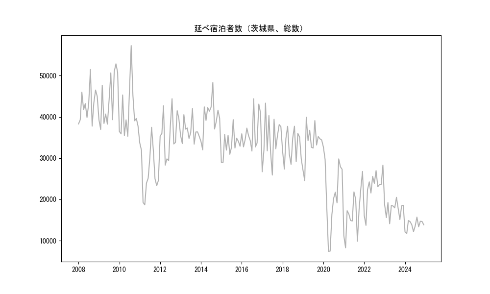

-
トップ
-
茨城県
茨城県
１．延べ宿泊者（総数）の推移
時系列グラフ

図１：茨城県内の従業員数100人以上の宿泊施設での延べ宿泊者数（国外、居住地不詳を含む総数）。
基本統計量
表１：従業員数100人以上の宿泊施設での延べ宿泊者の総数（国外、および居住地不詳を含む）に関する基本統計量。単位は人泊。平均は１か月あたりの平均値を表す。図１に対応。
| 2008年 |
42,982 |
3,958 |
37,765 (9月) |
51,499 (8月) |
| 2009年 |
44,164 |
6,037 |
36,954 (2月) |
52,877 (11月) |
| 2010年 |
41,091 |
6,461 |
35,311 (6月) |
57,301 (8月) |
| 2011年 |
27,093 |
5,863 |
18,675 (4月) |
37,481 (8月) |
| 2012年 |
36,009 |
5,346 |
28,309 (4月) |
44,412 (8月) |
| 2013年 |
36,525 |
2,557 |
33,400 (9月) |
42,028 (8月) |
| 2014年 |
39,941 |
4,270 |
32,026 (2月) |
48,338 (8月) |
| 2015年 |
33,194 |
2,963 |
28,958 (1月) |
39,337 (8月) |
| 2016年 |
36,396 |
4,228 |
31,722 (7月) |
44,398 (8月) |
| 2017年 |
34,519 |
5,430 |
25,901 (7月) |
43,346 (3月) |
| 2018年 |
32,805 |
3,664 |
27,357 (2月) |
37,745 (8月) |
| 2019年 |
33,688 |
4,390 |
24,543 (2月) |
39,919 (3月) |
| 2020年 |
21,493 |
8,398 |
7,392 (4月) |
32,701 (1月) |
| 2021年 |
16,788 |
5,485 |
8,263 (2月) |
26,780 (12月) |
| 2022年 |
22,752 |
4,149 |
13,705 (2月) |
28,302 (12月) |
| 2023年 |
17,732 |
1,855 |
14,095 (4月) |
20,497 (8月) |
２．宿泊者数の重心（年平均の推移）
図２：茨城県内の従業員数100人以上の宿泊施設での延べ宿泊者数（国外、居住地不詳を除く）の重心（年平均の推移）。
全画面表示
重心の前年平均からの移動距離と方位、および緯度・経度
表２：重心の前年平均からの移動距離と方位、および緯度・経度。図２に対応。
| 2008年 |
— |
— |
36.0160 |
139.5805 |
| 2009年 |
東 |
2.4km |
36.0157 |
139.6074 |
| 2010年 |
西南西 |
30.5km |
35.9310 |
139.2855 |
| 2011年 |
東北東 |
19.3km |
35.9820 |
139.4906 |
| 2012年 |
北西 |
2.3km |
35.9968 |
139.4722 |
| 2013年 |
西南西 |
25.1km |
35.9292 |
139.2065 |
| 2014年 |
西 |
19.3km |
35.9230 |
138.9926 |
| 2015年 |
東北東 |
47.1km |
36.0481 |
139.4916 |
| 2016年 |
北 |
0.2km |
36.0498 |
139.4919 |
| 2017年 |
東 |
3.4km |
36.0537 |
139.5297 |
| 2018年 |
西南西 |
3.0km |
36.0409 |
139.4999 |
| 2019年 |
西南西 |
2.2km |
36.0346 |
139.4773 |
| 2020年 |
東 |
16.8km |
36.0514 |
139.6623 |
| 2021年 |
東北東 |
7.5km |
36.0740 |
139.7406 |
| 2022年 |
西南西 |
7.7km |
36.0500 |
139.6609 |
| 2023年 |
北北東 |
4.4km |
36.0853 |
139.6820 |
運輸局別延べ宿泊者数
時系列（年平均）
 図３：茨城県内の従業員数100人以上の宿泊施設での１か月あたり平均延べ宿泊者数（国外、居住地不詳を除く）の運輸局別内訳。
図３：茨城県内の従業員数100人以上の宿泊施設での１か月あたり平均延べ宿泊者数（国外、居住地不詳を除く）の運輸局別内訳。
寄与度（前年からの変化率に対する）
図４：茨城県内の従業員数100人以上の宿泊施設での運輸局別延べ宿泊者数（国外、居住地不詳を除く）から求めた寄与度。
３．宿泊者数の重心（月別）
図５：茨城県内の従業員数100人以上の宿泊施設での延べ宿泊者数（国外、居住地不詳を除く）の重心（月別）。観測期間は2008年1月から2023年12月まで。
全画面表示
全期間（2008年1月～2023年12月）の平均と月別平均の比較
表３：全期間の平均から月別平均までの移動距離と方位、および緯度・経度。図５に対応。
| 全期間 |
— |
— |
36.0176 |
139.4920 |
| 1月 |
東北東 |
12.8km |
36.0658 |
139.6209 |
| 2月 |
北北西 |
1.7km |
36.0309 |
139.4832 |
| 3月 |
北西 |
7.0km |
36.0532 |
139.4284 |
| 4月 |
南西 |
5.5km |
35.9835 |
139.4472 |
| 5月 |
南東 |
3.0km |
36.0016 |
139.5194 |
| 6月 |
北 |
0.9km |
36.0258 |
139.4929 |
| 7月 |
南南西 |
1.4km |
36.0056 |
139.4877 |
| 8月 |
南南西 |
7.9km |
35.9569 |
139.4464 |
| 9月 |
西南西 |
8.7km |
35.9790 |
139.4083 |
| 10月 |
西 |
3.3km |
36.0152 |
139.4552 |
| 11月 |
北西 |
2.8km |
36.0380 |
139.4730 |
| 12月 |
東北東 |
14.1km |
36.0556 |
139.6410 |
運輸局別延べ宿泊者数
月別平均（2008年1月～2023年12月）
 図６：茨城県内の従業員数100人以上の宿泊施設での延べ宿泊者数（国外、居住地不詳を除く）の運輸局別内訳（月別）。
図６：茨城県内の従業員数100人以上の宿泊施設での延べ宿泊者数（国外、居住地不詳を除く）の運輸局別内訳（月別）。
寄与度（全期間の平均から月別平均への変化率に対する）
図７：茨城県内の従業員数100人以上の宿泊施設での運輸局別延べ宿泊者数（国外、居住地不詳を除く）から求めた寄与度（月別）。
４．データのダウンロード
出典：観光庁「宿泊旅行統計調査」に収録された「施設所在地、居住地別延べ宿泊者数（従業員数100人以上の施設）」
国土地理院「白地図（地理院タイル）」（図２と図５）